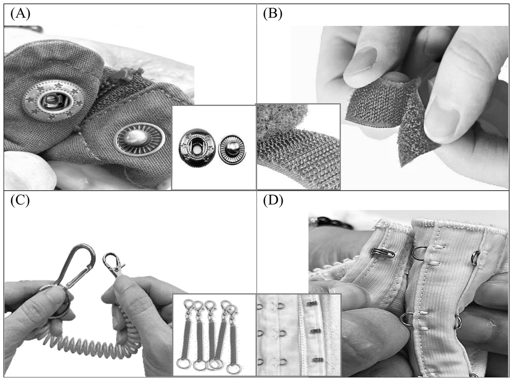

先讀文章、作答下方的題目，再展開最後的「看答案、依據句與逐段中譯」。也可以到互動練習線上作答，交卷後自動批改。
第 1 段One fine morning in 1941, Swiss engineer George de Mestral went for a walk in the woods with his dog. Upon their return home, he found a lot of burrs (from plants) stuck to the dog’s fur and his pants. He immediately rushed to his microscope and examined the burrs attached on his pants—feeling a lightbulb moment coming on.
第 2 段Upon closer examination, de Mestral observed that the burrs, which appeared straight to the naked eye, actually contained many small hooks that clung firmly to the loops in the fabric of his pants. He determined that if he could recreate the same thing, making hooks-and-loops that bind to each other firmly, he could produce a strong fastener with many uses.
第 3 段De Mestral’s first challenge was finding a fabric for a strong bonding system. He first tried cotton, but it proved too soft and could not withstand repeated openings and closures. After years of research and testing, he learned that synthetics worked best and eventually settled on heat-treated nylon, a strong and durable substance. By 1955, he had completed an improved version of the product, with each square inch of material containing 300 hooks, which made it stay fastened and yet easy enough to pull apart when needed. Named “Velcro,” from the French words velours (velvet) and crochet (hook), the new product received a patent from the Swiss government in 1955. De Mestral thus began mass-producing Velcro, opening plants in Europe and eventually into Canada and the United States.
第 4 段Initially Velcro did not fare well. As most fashion critics considered it ugly and cheap-looking, the use of Velcro was limited to athletic equipment. In the early 1960s, the product received a huge boost in popularity when NASA began using it in a lot of equipment that went into space along with astronauts. Today, de Mestral’s design is found almost everywhere: clothing and footwear, toys, airline seat cushions, blood pressure cuffs and surgeons’ gowns. Most impressively, the magical fastener was used in the first human artificial heart transplantation to hold together parts of the device.
35.Which of the following pictures shows de Mestral’s invention?

36.What does the author mean by “a lightbulb moment” in the first paragraph?
37.Which of the following statements about Velcro is true?
38.Which of the following fields is NOT mentioned for Velcro uses in the passage?
| 題號 | 官方答案 | 答對率 | 鑑別度 |
|---|---|---|---|
| 35 | (B) | 81% | 46 |
| 36 | (D) | 77% | 58 |
| 37 | (B) | 72% | 61 |
| 38 | (A) | 55% | 62 |
答對率與鑑別度出處：大考中心 113 學年度學科能力測驗統計圖表：英文科答對率及鑑別度表
第 2 段Upon closer examination, de Mestral observed that the burrs, which appeared straight to the naked eye, actually contained many small hooks that clung firmly to the loops in the fabric of his pants.
第 2 段He determined that if he could recreate the same thing, making hooks-and-loops that bind to each other firmly, he could produce a strong fastener with many uses.
第 1 段He immediately rushed to his microscope and examined the burrs attached on his pants—feeling a lightbulb moment coming on.
第 3 段He first tried cotton, but it proved too soft and could not withstand repeated openings and closures.
第 4 段As most fashion critics considered it ugly and cheap-looking, the use of Velcro was limited to athletic equipment.
第 4 段In the early 1960s, the product received a huge boost in popularity when NASA began using it in a lot of equipment that went into space along with astronauts.
第 4 段Most impressively, the magical fastener was used in the first human artificial heart transplantation to hold together parts of the device.
第 1 段1941 年一個晴朗的早晨，瑞士工程師 George de Mestral 帶著狗到樹林裡散步。回家後，他發現狗毛和自己的褲子上黏了許多植物的刺果。他立刻衝到顯微鏡前，仔細觀察黏在褲子上的刺果，感覺好點子就要冒出來了。
第 2 段進一步仔細觀察後，de Mestral 發現，肉眼看起來筆直的刺果，其實有許多小鉤子，牢牢勾住褲子布料上的線圈。他斷定，如果能重現同樣的構造，做出彼此緊緊扣住的鉤子和線圈，就能製造出牢固又用途廣泛的扣件。
第 3 段de Mestral 的第一個難題，是找到一種能牢牢黏合的布料。他先試了棉布，可是棉布太軟，經不起反覆撕開、黏合。經過多年的研究和測試，他發現合成纖維效果最好，最後選定經過熱處理的尼龍，一種堅固耐用的材料。到了 1955 年，他完成了改良版的產品，每平方英寸的材料上有 300 個鉤子，可以黏得很牢，需要時又能輕鬆扯開。這項新產品取名為 Velcro，來自法文的 velours（天鵝絨）和 crochet（鉤子），1955 年取得瑞士政府核發的專利。de Mestral 於是開始量產魔鬼氈，在歐洲設廠，後來又擴展到加拿大和美國。
第 4 段魔鬼氈一開始並不成功。大多數時尚評論家認為魔鬼氈很醜，看起來很廉價，所以只用在運動器材上。1960 年代初期，美國太空總署開始在許多隨太空人上太空的設備上使用魔鬼氈，魔鬼氈的人氣因此大增。如今 de Mestral 的設計幾乎隨處可見：衣服和鞋子、玩具、飛機座椅的坐墊、血壓計的壓脈帶和外科醫師的手術衣都有。最令人驚嘆的是，第一次人工心臟移植手術也用了這種神奇的扣件，把裝置的零件固定在一起。
這一篇有 3 題的解析，還沒有逐一說明每個錯誤選項錯在哪裡，正在補齊。